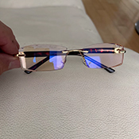

Ich habe vor Kurzem diese neuartige Brille entdeckt
Ein innovatives Start-up stellt die weltweite Brillenbranche auf den Kopf.
Jahrzehntelang wurde der Markt für Korrektionsbrillen von nur drei großen Unternehmen beherrscht, die ihre Preise nahezu frei bestimmen konnten – zum Nachteil der Kundinnen und Kunden.
Ein innovatives Start-up stellt die weltweite Brillenbranche auf den Kopf.
Das Unternehmen hinter Blue Lume hat eine Möglichkeit entwickelt, die Brillenbranche zu verändern – und das zu einem Bruchteil des üblichen Preises.
Während Millionen Menschen mit wechselnden Sehstärken und teuren Sehtests zu kämpfen haben, könnten die neuen Brillen von Blue Lume zu einem der erfolgreichsten Brillenmodelle der jüngeren Geschichte werden.
Was steckt dahinter?
Lernen Sie Blue Lume kennen.
Für die Entwicklung des neuesten Modells holte das Unternehmen hinter Blue Lume Optikingenieure aus der Luft- und Raumfahrt sowie der Medizintechnik ins Team.
Im Vergleich zu herkömmlichen Korrektionsbrillen soll diese eine Brille mehrere andere ersetzen – indem sie sich automatisch an unterschiedliche Sehentfernungen anpasst.
Das Ziel: weniger Aufwand durch mehrere Brillen, wechselnde Sehstärken und kostspielige Augenarzttermine. Das Ergebnis ist laut Hersteller eine adaptive Brille, die ihre Gläser automatisch anpasst.
Doch jetzt kommt das Besondere ...
Blue Lume nutzt eine selbstanpassende Technologie, die laut Hersteller ohne individuelles Brillenrezept auskommt und sich im Bereich von −10 bis +10 Dioptrien automatisch einstellen soll.
Weniger Brillenwechsel, weniger Aufwand bei veränderten Sehstärken. Eine einzige Brille soll sich automatisch an unterschiedliche Sehbedürfnisse anpassen.
Viele beschreiben das erste Aufsetzen als überraschend. Aber wie soll diese Technologie eigentlich funktionieren?
Wie funktioniert das?
Blue Lume hat nach eigenen Angaben ein automatisches Anpassungssystem entwickelt, das mithilfe einer neuartigen Glastechnologie die Sicht an unterschiedliche Entfernungen anpassen soll.
Die Anwendung ist einfach: Brille aufsetzen und die Gläser sollen sich automatisch an den jeweiligen Sehbedarf anpassen.
Mit weniger als 28 Gramm soll die Brille besonders leicht sein. Viele merken beim Tragen kaum, dass sie eine Brille aufhaben – abgesehen davon, dass sie in der Nähe und Ferne besser sehen sollen.
Blue Lume richtet sich an Menschen mit unterschiedlichen Sehanforderungen – ob bei Kurz- oder Weitsichtigkeit.
Ob im Büro, beim Autofahren oder beim Lesen: Die Brille soll in verschiedenen Alltagssituationen nutzbar sein. Die Gläser passen sich laut Hersteller automatisch an die jeweilige Sehentfernung an.
Stellen Sie sich vor, Sie könnten den Blick bequem zwischen nahen und entfernten Objekten wechseln – ohne ständig die Brille wechseln zu müssen.
Was kann Blue Lume sonst noch?
1. Blaulichtfilter
Blue Lume filtert einen Teil des blauen Lichts
Bildschirme begleiten uns überall – bei der Arbeit, zu Hause und unterwegs. Wer viel Zeit vor digitalen Geräten verbringt, kennt möglicherweise müde Augen oder Beschwerden nach langer Bildschirmarbeit. Blue Lume verfügt über einen Filter für einen Teil des blauen Lichts.
2. Automatische Tönung bei Sonnenlicht
Selbsttönende Gläser werden bei Sonnenlicht dunkler und bieten UV-Schutz
Weniger Wechsel zwischen Alltags- und Sonnenbrille: Die photochromen Gläser von Blue Lume sollen sich bei Sonnenlicht automatisch verdunkeln und in Innenräumen wieder klar werden – praktisch wie zwei Brillen in einer.
3. Besonders robust
Blue Lume ist auf hohe Strapazierfähigkeit ausgelegt
Blue Lume besteht laut Hersteller aus hochwertigen Materialien mit kratzbeständiger Beschichtung. Die Brille ist auf Langlebigkeit ausgelegt und wiegt weniger als 28 Gramm – für ein angenehm leichtes Tragegefühl.
Wie viel kostet Blue Lume?
Eine komplette Korrektionsbrille kann in Deutschland schnell 200 bis 400 € kosten – zusätzliche Untersuchungen oder neue Gläser noch nicht eingerechnet. Da könnte man erwarten, dass Blue Lume ähnlich teuer ist ...
Der reguläre Preis von Blue Lume liegt jedoch laut Angebot bei nur 79,98 € – deutlich weniger als bei vielen herkömmlichen Korrektionsbrillen!
Doch es geht noch günstiger als zum regulären Preis von 79,98 €!
Mit der aktuellen Aktion kostet eine Blue-Lume-Brille 39,99 € pro Stück (50 % Rabatt). Bei mehreren Brillen sinkt der Stückpreis: 2 Stück je 37,99 €, 3 Stück je 35,99 €, 4 Stück je 33,99 € oder 5 Stück je 31,99 €.
Hier Blue Lume zum Aktionspreis ansehen (solange verfügbar) >>
Angebot endet am um .
Warum ist Blue Lume so günstig?
Wussten Sie, dass einige wenige große Unternehmen einen erheblichen Teil des weltweiten Brillenmarkts prägen? Das kann die Auswahl einschränken und zu höheren Preisen beitragen.
Bei Blue Lume verfolgt der Anbieter einen anderen Ansatz: Der Vertrieb erfolgt online und ohne kostspielige Zwischenhändler. Die dadurch eingesparten Kosten sollen an die Kundschaft weitergegeben werden.
Statt auf hohe Ladenpreise setzt das Unternehmen auf ein direktes Vertriebsmodell, neue Designs und positive Kundenbewertungen.
Fazit: Lohnt sich Blue Lume?
Meiner Meinung nach: ja. Für Menschen, die im Alltag häufig zwischen unterschiedlichen Sehentfernungen wechseln, kann Blue Lume eine interessante Option sein.
Wer den aktuellen Rabatt auf Blue Lume nutzen möchte, sollte sich das Angebot ansehen, solange es verfügbar ist. Die Nachfrage ist laut Anbieter hoch.
So wird verständlich, warum sich laut Anbieter bereits Tausende Kundinnen und Kunden für diese Brille entschieden haben!
Die Blue Lume wirkt wie eine deutlich teurere Brille, kostet im Angebot aber nur 39,99 € (mit dem aktuellen Rabatt von 50 %).
Besonders attraktiv ist der Preis. Sollte die Aktion noch laufen, lohnt es sich, das Angebot genauer anzusehen.
Mein Fazit dürfte klar sein: Mir gefällt die Brille sehr gut – besonders in dieser Preisklasse.
Wo bekomme ich die originale Blue Lume?
Achten Sie auf das Original! Bei günstigen Nachahmungen ist nicht gewährleistet, dass sie dieselben Eigenschaften bieten.
Bestellen Sie Ihre Blue Lume über die offizielle Website des Anbieters.
Laut Anbieter erhalten Sie für Blue Lume eine 90-Tage-Geld-zurück-Garantie und eine 10-jährige Garantie. Aktuell wird außerdem ein Rabatt von 50 % angeboten, der laut Aktion nur heute gilt.
So einfach geht’s!
Blue Lume
Nur HEUTE 50 % Rabatt sichern
Häufig gestellte Fragen
F: Kann ich diese Brille täglich tragen?
Ja. Die Brille ist für den täglichen Gebrauch ausgelegt. Der integrierte Blaulichtfilter reduziert einen Teil des blauen Lichts von Bildschirmen.
F: Kann ich die Brille drinnen und draußen tragen?
Ja, die Brille ist für die Nutzung in Innenräumen und im Freien vorgesehen – etwa beim Lesen, am Smartphone oder vor dem Fernseher. Die selbsttönenden Gläser reagieren auf unterschiedliche Lichtverhältnisse.
F: Benötigt die Brille besondere Pflege?
Die Pflege ist unkompliziert. Reinigen Sie die Gläser regelmäßig mit einem weichen Brillenputztuch.
F: Wie lange hält die Brille?
Bei sorgfältiger Pflege kann Blue Lume viele Jahre halten. Laut Anbieter gilt eine Garantie von zehn Jahren.
So einfach geht’s!
Blue Lume
Nur HEUTE 50 % Rabatt sichern
TIPP: Je mehr Blue-Lume-Brillen Sie bestellen, desto niedriger ist der Stückpreis: 2 Stück je 37,99 € (53 % sparen), 3 Stück je 35,99 € (55 % sparen), 4 Stück je 33,99 € (58 % sparen) oder 5 Stück je 31,99 € (60 % sparen). Die endgültigen Paketpreise sehen Sie auf der Bestellseite.
Diese Brille sorgt für Gesprächsstoff ...
Werfen Sie einen Blick auf diese Kundenbewertungen von der Website des Anbieters!
Weniger angestrengte Augen!
Bewertet in Deutschland am
Ich benutze Blue Lume jetzt seit einigen Wochen und bin wirklich begeistert. Früher waren meine Augen nach langen Stunden am Computer oft müde und ich hatte Kopfschmerzen. Jetzt komme ich bei der Bildschirmarbeit deutlich besser zurecht.
Ein großer Unterschied!
Bewertet in Deutschland am
Ich nutze Blue Lume seit einigen Wochen und bin positiv überrascht. Die Gläser passen sich automatisch an, sodass ich nicht mehr ständig zwischen verschiedenen Brillen wechseln muss.
Eine echte Erleichterung im Alltag
Bewertet in Deutschland am
Ich hätte nie gedacht, dass mir eine Brille so gut gefallen würde. Besonders praktisch finde ich, dass sich die Gläser automatisch anpassen. Endlich muss ich nicht mehr dauernd zwischen zwei Brillen wechseln.
